Integrate
Oracle Digital Assistant with Oracle Service Cloud Live Chat - Tutorial 1 of 2
Integrate
Oracle Digital Assistant with Oracle Service Cloud Live Chat - Tutorial 1 of 2
This is a tutorial 1 of 2 that illustrates how human chat functionality can be integrated with Oracle Digital Assistant using Live Chat service of Oracle Service Cloud.
Tutorial 1 explains how an Oracle Digital Assistant skill can be integrated with the Oracle Service Cloud.
Tutorial 2 explains how context from the skill be passed over to the service cloud chat through primary and custom properties in service cloud. Using this context information a message can be routed to a specific agent queue in Service Cloud.
In this tutorial i.e. tutorial 1 you will be able to configure
service cloud to accept chat requests from a digital assistant
on behalf of a user. The agent would be able to see existing
conversation with the end user and would also be able to launch
certain action on the assistant for the user. This would be
quite an interesting experience so let’s get started!
Here’s the scenario for this tutorial:
You
run a Pizza Store and provide online services to order a pizza
through various channels including a digital assistant on your
web site and Facebook Messenger. Customers have made a few
remarks that the bot is not able to help in certain situations
and connecting with a live customer service representative aka
CSR is necessary.
Here is what you need to do:
- Use the CrcPizzaSkill sample available in the Oracle Digital Assistant User Interface or import one from the resources provided as part of this tutorial.
- Add the Service Cloud integration Intent and corresponding dialog flow definitions.
- Configure the Service Cloud for the live chat integration with the skill.
- Test the skill.
 Before You Begin
Before You Begin
What Do You Need?
To complete this tutorial, you need:
- Access to
Oracle Digital Assistant Cloud instance.
- Access to Oracle Service Cloud instance.
- Oracle Service Cloud AgentWeb interface to test the live chat
Tutorial I - Enabling Service Cloud Live Chat with Oracle Digital
Assistant
Please
follow
below steps.
- Access the Oracle Digital Assistant (ODA) in a browser.
- Please
use appropriate login credentials.
- After successful logging, you will land up on the Oracle Digital Assistant UI page
- Access the Oracle Service Cloud instance. In Oracle Service Cloud do the following
- Visit the Site Configuration & enable the CHAT_CONSUMER_WS_API ENABLED verb and CHAT_UQ_WS_API_ENABLE.
- Grant the following permissions to the user that's configured for the User Agent channel:
- Access
to the correct interface.
- Access to the Public SOAP API through the Account Authentication permission.
- Create the Agent Integration channel that allows the skill to communicate with Oracle Service Cloud. The user configured for this channel must be granted the permissions noted in the previous step.
 Setup
the Agent Integration Channel
Setup
the Agent Integration Channel
In this part of the tutorial, we'll complete the creation of a service cloud agent integration channel in Oracle Digital Assistant. we'll:
- Access the Oracle Digital Assistant User Interface and go to the Agent Integration tab under Channels
- Create a new Agent Integration by providing relevant information about the service cloud we would connect to.
Create Agent Integration
Follow the instructions given below to configure the service
cloud integration channel.
- In ODA, click
 to open the side menu.
to open the side menu. - Click Development and select Channels.
- Click
again to collapse the side menu.
- Click
on to
create a new Oracle Service Cloud Integration Channel.
Field
Value
Name
ServiceCloudIntegration
Description
Service Cloud Integration
Integration Type
Service Cloud
Domain Name
rightnowdemo.com
Hostname Prefix
rnowgse00914
Site Name:
rnowgse00914
User Name
Admin2
Password
<Your Service Cloud Password>
Ensure that the Chat Service is enabled for this instance of Service Cloud.
- Verify that the information is correct. Note that Agent Integration channel should have a unique name for this instance of Oracle Digital Assistant. Note down the Name of the Agent Integration.
 Setup
starter Pizza Skill
Setup
starter Pizza Skill
On
your instance or in the supplied zip file you will find a
skill named CrcPizzaSkill_Starter. Before you get to work, you
need to create your own copy of this skill.
Among other things, the digital assistant:
- Greets the user upon access.
- Upon user request, lists what it can do and provides entry points into the given skills.
- Routes explicit user requests to the appropriate skill.
- Handles interruptions to flows.
- Handles disambiguation.
- Handles requests to exit the bot.
Create a clone of the CrcPizzaSkill_Starter
- Click to
open the side menu.
- Click Development and select Digital Assistants.
- Click
again to collapse the side menu.
- In the skills dashboard, select the CrcPizzaSkill_Starter tile to open the bot editing environment. If you do not find this skill simply use the Import option to import this skill using CrcPizzaSkill_Starter.zip file
- Clone the skill as shown in the image below

- Click
Open cloned skill bot afterwards and then click Clone.
- You can alternatively go to the skills dashboard, select the CrcPizzaSkill_<Your Initials> tile to open the bot editing environment.
What you just did: Created
your personal copy of the hands-on lab starter skill. You need
to use CrcPizzaSkill_<Your Initials>
for complete your skill
 Configure
Skill for Live Chat
Configure
Skill for Live Chat
- Open the
CrcPizzaSkill_< your initials>.CrcPizzaSkill
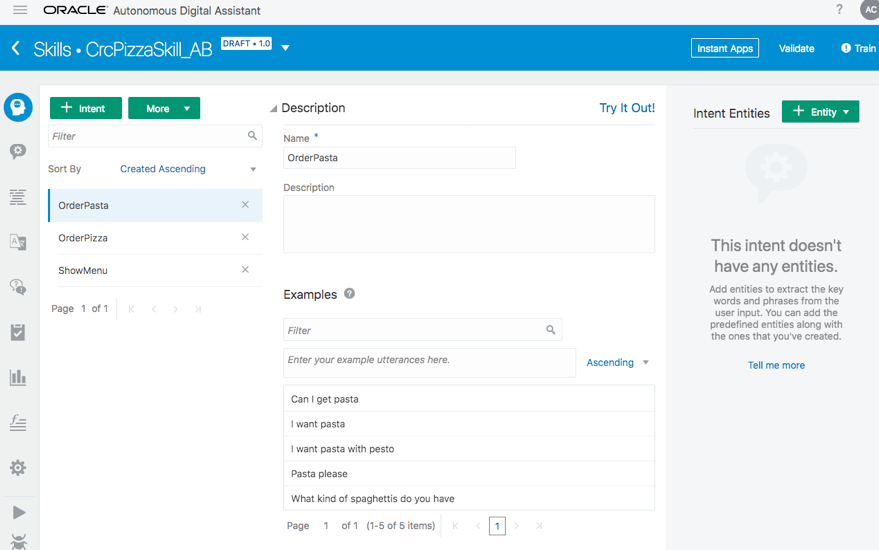 - Create an intent “LiveChat”
and add the following utterances.·
- I would like to chat with a human
- Please transfer me to a live chat agent
- Is it possible to chat with a real person
- I want to talk to somebody
- Train the bot.
 Configuring
the Dialog Flow the Agent
Configuring
the Dialog Flow the Agent
Now to handle the conversation between user and the agent we need
to add an intent to the dialog flow and also add steps to
manage the conversation and return back to the bot.
- Click

- Locate the
Intentstate in the flow. Search forSystem.Intentto find it faster. - Update the state by adding the “LiveChat” intent as the first action before the OrderPizza intent within the actions section. The changes are highlighted in bold in the sample here. Click outside the flow editor to save the changes. You can validate after change to ensure there are no dialog flow validation errors.
- Add the following steps at the end of the dialog flow.
Replace first name, last name with your own information. In a
real implementation the profile information is populated by
the channel. You will find this code in the supplied dialog.yaml
file in the resources folder of the zip file resources.zip.
# Service Cloud Live Chat Integration setupProfileFirstName: component: "System.SetVariable" properties: variable: "profile.firstName" value: "Abhay" transitions: {} setupProfileLastName: component: "System.SetVariable" properties: variable: "profile.lastName" value: "Bhavsar" transitions: {} setupProfileEmail: component: "System.SetVariable" properties: value: "abhay.bhavsar@oracle.com" variable: "profile.email" transitions: {} agentInitiation: component: "System.AgentInitiation" properties: agentChannel: "ServiceCloudIntegration" agentActions: "OrderPizza" nlpResultVariable: "iResult" waitingMessage: "Let me connect you with our Customer Service Agents who can further assist you!" transitions: actions: accepted: "agentConversation" rejected: "reject" OrderPizza: "OrderPizza" agentConversation: component: "System.AgentConversation" properties: agentChannel: " ServiceCloudIntegration " nlpResultVariable: "iResult" exitKeywords: "bye, bye, good night, end, quit" conclusionMessage: "Have a nice day." transitions: next: "endPrompt" endPrompt: component: "System.Output" properties: text: "Connecting you back to the Bot.." keepTurn: true transitions: next: "OrderPizza" reject: component: "System.Output" properties: text: "Sorry, looks like our Agents are currently not available! We'll call you back ASAP" transitions: return: "done"Note:
The agentActions property allows the Service Cloud live agent to trigger an action inside the skill by specifying /<action-name> e.g. /OrderPizza in this case. This triggers the “OrderPizza” action on the skill navigating to the OrderPizza state in the dialog flow - Validate the dialog flow. Special care should be given to the indentation. Click on the Bug icon to check for errors.
Intent:
component: "System.Intent"
properties:
variable: "iResult"
transitions:
actions:
LiveChat: "setupProfileFirstName"
unresolvedIntent: "Unresolved"
OrderPasta: "OrderPasta"
ShowMenu: "ShowMenu"
OrderPizza: "OrderPizza"
 Testing
the hand off
Testing
the hand off
- Enable the Skill conversation log in the Settings tab. 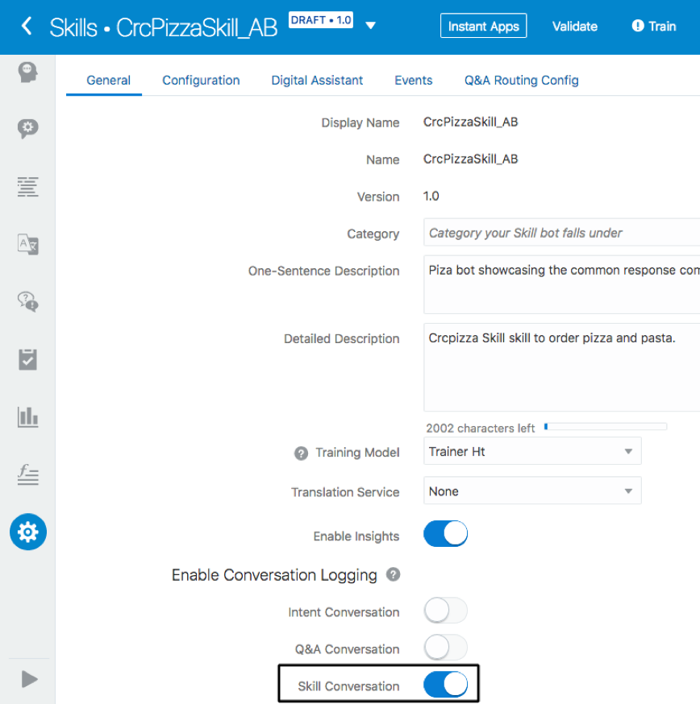
- Login to the Service Cloud Web Chat Application by going to a browser and entering the Service Cloud WebChat URL.https://<YOUR_SERVICE_CLOUD_INSTANCE>.rightnowdemo.com/AgentWeb/Enter Admin2 as the Username and the appropriate Password for your instance 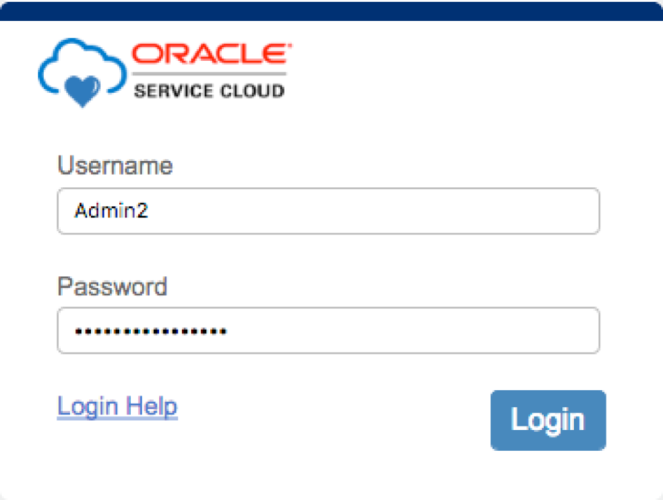
- If you see a Key sign then you need to click on it and login and select Unrestricted from the drop down. 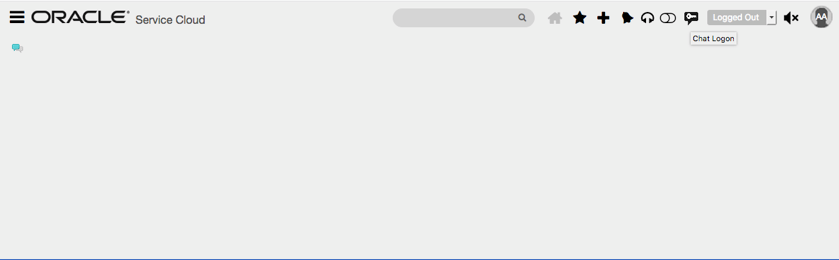
- You are ready to accept the chat. 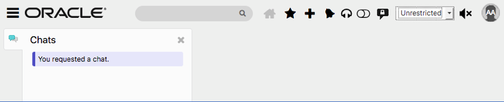
- Now go back to the Skills UI and resize both the windows side by side so that you could see both. Type “I need to chat with a human” in the Bot tab of the tester window.
- The Service Cloud Web Chat window on the right you will be prompted to accept/reject incoming request for a live chat from the user, please click on accept. 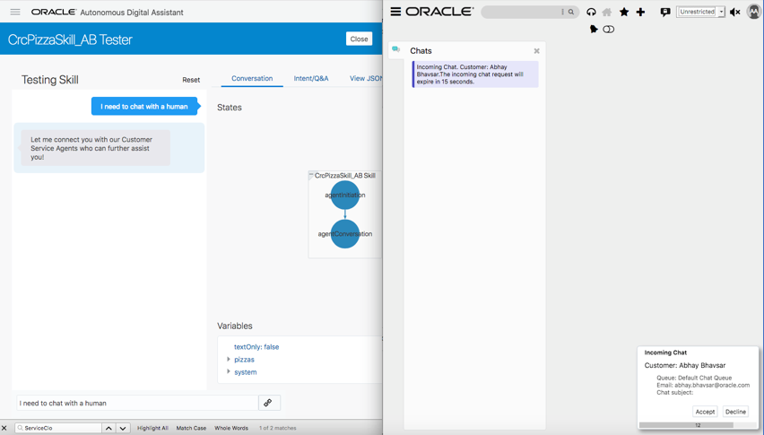
- Observe the messages in both the windows. 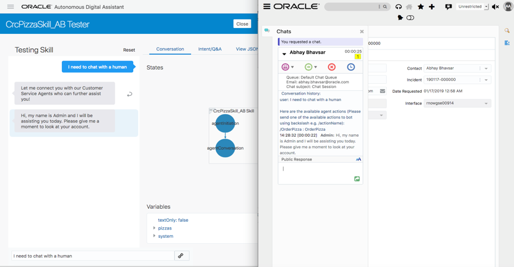
- In the skill tester window, type message “I am looking for some offers I can’t find online.” The message appears in the service cloud chat window. Reply by entering “We have a special offer for you today, get 10% off on your order today.” 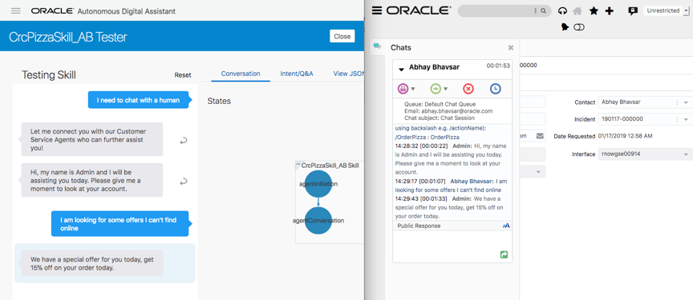
- Enter “Great show me the pizzas now” in the tester window. Now in order for the agent to hand over the discussion to the skill enter /OrderPizza in the agent chat window. This will end the user to agent conversation and will trigger the OrderPizza action in the dialog. 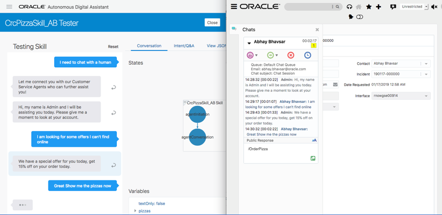
- This results in displaying the pizza menu in the tester window. 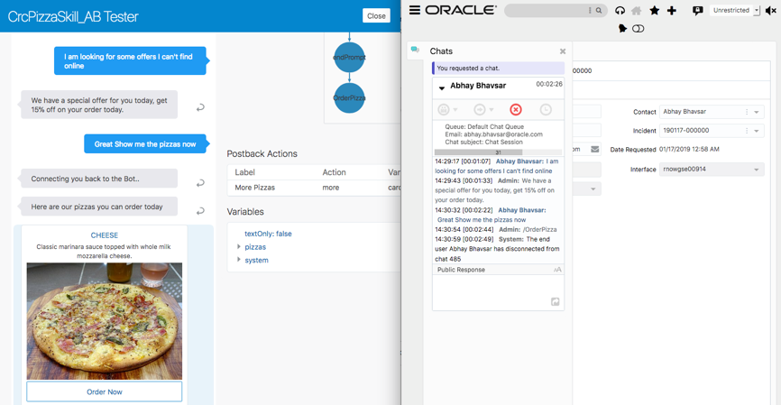
- You may choose to terminate the agent chat window using as
shown below.
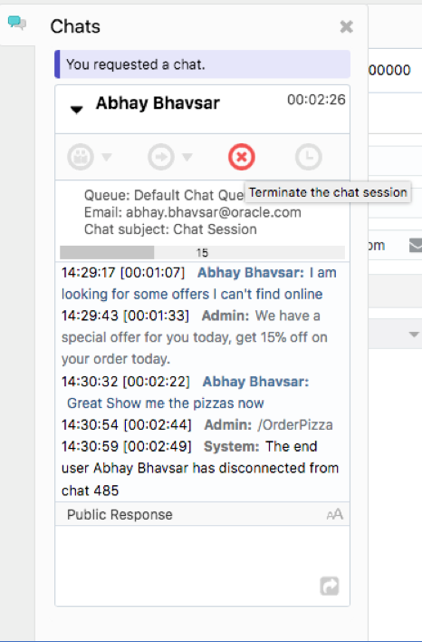
You should see the following screen. You are ready to accept the chat.
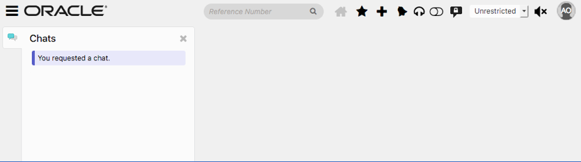
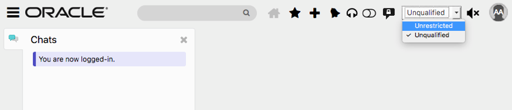
Note the Queue Name: Default Chat Queue. In the advanced tutorial we will create a special queue in the Service Cloud for messages coming from the skill. The Default queue can continue accessing chat messages that are directly started by web site visitor by clicking on the Live Chat button. This way there could be a different agent team who are helping web site visitors and a different team helping the customers coming from the chatbot channel.
Handling
unexpected multiple Live Chat Requests
When users initiates a chat request the requests get queued up at
the service cloud and sometimes the user has to wait for the agent
for a while before the agent accepts the requests and starts
replying back. During this time if the user sends multiple chat requests the bot responds with a message e.g. “Agent Rejected” message but the agent could still accept and start chatting with the user. This is misleading as user would feel the agent has rejected and would land up again requesting for chatting rather than waiting.
Perform the following steps to fix this issue.
- Log out of Service cloud web client and login again just to ensure there are no pending queue requests that may interfere with our next test case. 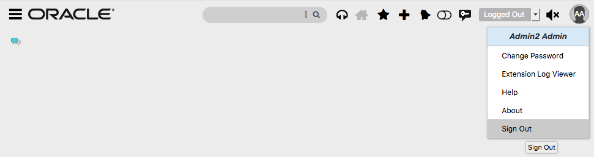 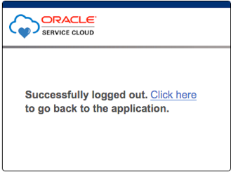 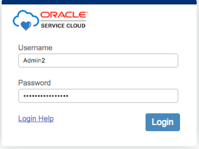
- Now go to the dialog flow and comment out the default error handler so that you could get to see the real error from service cloud when user sends multiple chat requests.
- Now go to Intent and add a new utterance “Can I get pasta” to intent “LiveChat”. The idea is that when you enter this utterance in the tester window the skill will now prompt you for selecting LiveChat or OrderPasta. 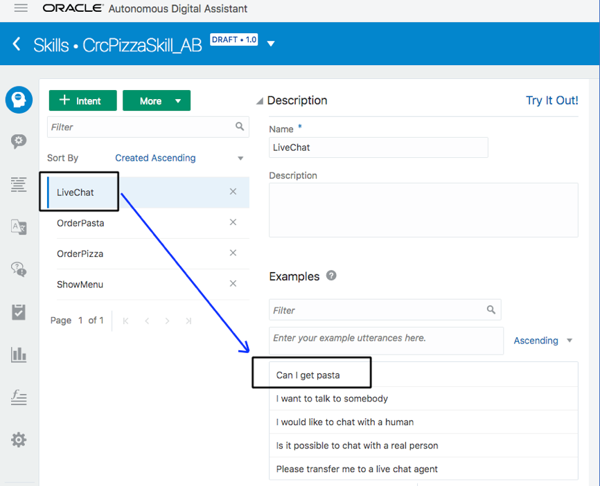
- Click on Train and train the bot. 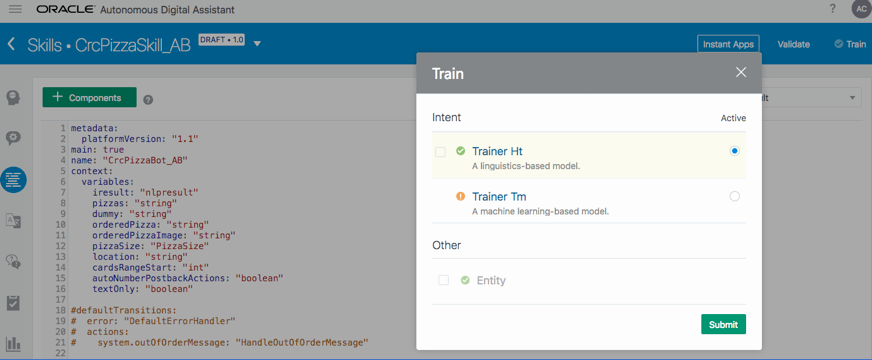
- Go to the tester and type the text “Can I get pasta”. Note that you need to now choose between 2 intents. LiveChat & OrderPasta. Click on LiveChat. 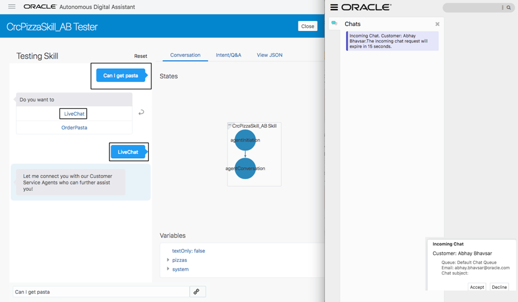
- This will prompt the agent with an Incoming Chat dialog. Do not click any button.
- Now go back to the tester window and click on LiveChat button again. You will notice that the skill responds back with a message Agent Rejected. This is a misleading message as the agent still keeps getting the Incoming Chat dialog window. 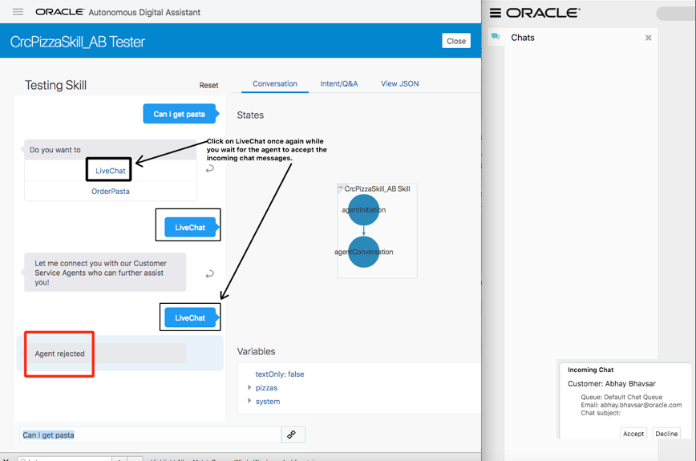
- Now click on Accept in the service cloud window and start the normal conversation. Notice that the conversation messages between the user and the skill are duplicated on the service cloud. This is due to the reason that you clicked on LiveChat twice. 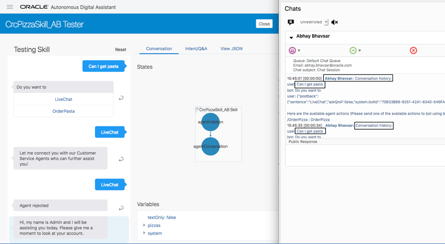
- Terminate the chat window on service cloud and click on Reset button on the Skill tester.
- Now let’s fix this issue. Go to the Dialog flow and add the following property resumedMessage to the System.AgentInitiation state.
- Validate the flow and ensure there are no validation errors.
- Go to the tester window and try the same thing. Enter “Can I get pasta?”, click on LiveChat and after a few seconds click on LiveChat again. Observe what we see now. 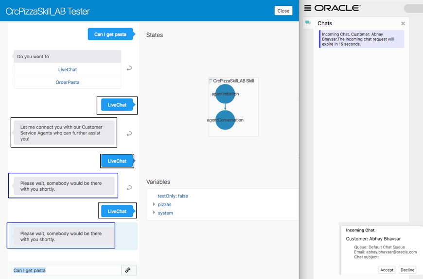
- You will notice that no matter how many times the user clicks on LiveChat button you get a friendly message now.
metadata:
platformVersion: "1.1"
main: true
name: "CrcPizzaBot_AB"
context:
variables:
iResult: "nlpresult"
pizzas: "string"
dummy: "string"
orderedPizza: "string"
orderedPizzaImage: "string"
pizzaSize: "PizzaSize"
location: "string"
cardsRangeStart: "int"
autoNumberPostbackActions: "boolean"
textOnly: "boolean"
#defaultTransitions:
# error: "DefaultErrorHandler"
# actions:
# system.outOfOrderMessage: "HandleOutOfOrderMessage"
agentInitiation:
component: "System.AgentInitiation"
properties:
agentChannel: "ServiceCloudIntegration"
agentActions: "OrderPizza"
nlpResultVariable: "iResult"
waitingMessage: "Let me connect you with our Customer Service Agents who can further assist you!"
resumedMessage: "Please wait, somebody would be there with you shortly."
transitions:
actions:
accepted: "agentConversation"
rejected: "reject"
OrderPizza: "OrderPizza"
Conclusion
Hooray! you have completed the tutorial 1 of 2 that
enabled a service cloud chat with your skill and you
also learnt how to handle multiple chat requests from the
customer as they wait for the agent to accept the incoming
chat request.